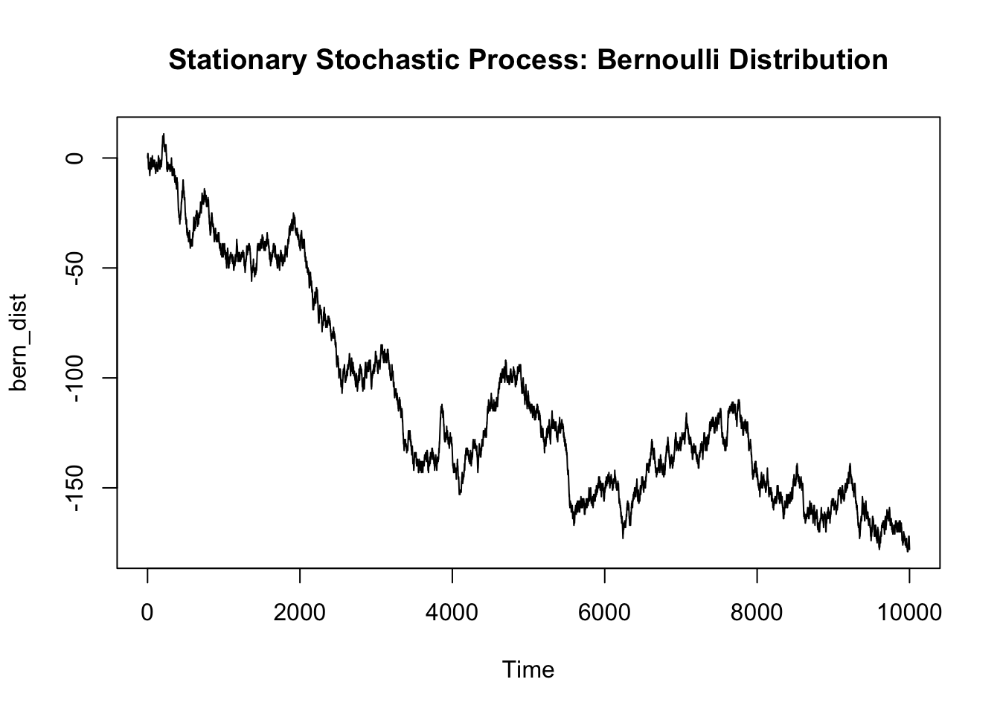

library("tseries")In general, the definition of a stochastic process varies much differently from that of probabilistic concepts that have previously been studied. The study of stochastic processes can be conceptualized as the study of probability distributions and probabilities over time.
The project will cover the main conceptual areas surrounding that lay the foundation for understanding stochastic processes. These are the following sections:
Commentary is in italics
The definition of a stochastic process can be characterized by the study of the process that generates random variables on some according to the following conditions:
Let’s take the Bernoulli Process of flipping a fair coin (probability of heads = 1/2, probability of tails = 1/2) as an example to demonstrate the intuition for these conditions
Sample space \({\Omega}\):
1) The set of all outcomes is non-zero. There exists some outcomes from
the generated stochastic process
The Bernoulli Process of one flip is the set {H,T}, a Bernoulli Process of two flips is the set {HH, HT, TH, TT}, and so and so forth
\({\sigma}\)-algebra \(F\)
1) The events which are a set of all subsets of \({\Omega}\). It can defined as the
collection of all subsets created by the permutations for a specified
outcome length. The conditions for the set is related to the result of
operations performed (complement, union, and intersections) and
inherently allows our events/subsets/etc. to be measured by
probability
If our Bernoulli Process of one flip is the set {H, T}, then {{H}, {T}} is a \({\sigma}-algebra\) but {{H}, {T}, {H}} or {{HT}} is not
For reference, a measurable Function: A function between two measurable spaces that maintains the structure of one space to another space
Probability measure \({P}\)
1) The measure of the entire sample space is one \({P(\Omega) = 1}\)
In our Bernoulli Process of one flip generates the \(\Omega\) as the set {H, T}, then our probability measure is \(\Sigma \{0.5, 0.5\} = 1\)
Index Set \({T}\)
1) The collection of random variables can be indexed by some set \(T\) (often taken to be discrete or
continuous time) such that the stochastic process can be defined as:
\({X(t): t \in T}\)
In our Bernoulli Process of two flips defined as X(t) t = 1,2, that generates the \(\Omega\) of {HH, HT, TH, TT} then X(1) = H, X(2) = T is indexed by discrete time
State Space \({S}\)
1) The values of the random variables must take exist in the defined
mathematical space (i.e. Euclidean)
The Bernoulli Process of one flip generates an outcome of either H or T, but these can be represented by 1 or 0
In essence, the importance for defining the random variables on some common probability space (something that seems inherently straightforward) is to ensure that one can measure differences in the process and outcomes, rather than relying on any one probabilistic distribution governing the process. If one wants to define two different distributions that govern the process under the same space, the definition may allows for that
With the general assumptions of stochastic processes considered, certain properties can be characterized to model specific types of stochastic properties.
An alternative view on stochastic processes that might be useful for the this section,describes the stochastic process as a probability distribution and is given by the following definition:
The law of the stochastic process seems to be defined as \({\mu = P \circ G}\), or equivalently the probability measure across the function defining the “behavior of the random variable”. The law characterizes the probability distribution of the stochastic process across time, and for a random walk it is the probability distribution of the possible trajectories of the walk.
The following characteristics are as such:
With the assumption of the any value t from the index set \(T\) equal to the value at time t, stochastic processes can be further characterized as discrete-time or continuous-time stochastic models.
Discrete-Time Stochastic Models Discrete-time stochastic models are relevant for characterizing points discrete points in time (i.e. 1, 2, 3, 4)
Continuous-Time Stochastic Models Continuous-time stochastic models are relevant for characterizing continuous points in time (i.e. \(t_1 - t_2\))
The increment can be thought of as the difference between the stochastic process at two arbitrary times \(t_1, t_2\). The difference between the two random variables produced can be though of as an S-valued random variable, which is equivalent to the path defined by a random variable between two points.
An increment is often characterized to have properties of being stationary independent, or both.
Independent Increment An independent increment acts as an extension to the idea of independence for any two random variables, to any the S-valued random variable produced from the interval indexed by time t. In essence, the probability of the random path at a time interval t is independent of the random path at any other time interval.
\({F_{X_{t_1}}, ..., x_{t_n}(x_1, ..., x_n) = F_{X_{t_1}}(x_1), ..., F_{X_{t_n}}(x_n)}\) for all \({x_1, ... x_n}\)
An independent increment ensure that at every point t in the path function, the path instantaneous path generated is independent.
For \({t_1, t_2, ..., t_n \in T}\) with \(t_1 < t_2 < ... < t_n\), the increments \({X_{t_1}, X_{t_2} - X_{t_1}, ..., X_{t_n}-X_{t_{n-1}}}\) are independent.
Such a definition applies mostly to a continuous function as it ensures that the time increments be the same, resulting in equidistant intervals. The equidistant, infinitely small intervals are key for defining any continuous function which is very elegant
Stationary Increment A stationary increment is the idea that the probability distribution between \({X_t - X_s}\) for two times \({t, s}\), is dependent only on the scalar length of the time interval \(s-t\).
For \({t_1, t_2, ..., t_n \in T}\) with \(t_1 < t_2 < ... < t_n\), the increments \({X_{t_1}, X_{t_2} - X_{t_1}, ..., X_{t_n}-X_{t_{n-1}}}\) are dependent only on the scalar length of the time interval \(t_j - t_i\)
For a Wiener process, the probability distribution of \(X_t - X_s\) is normal with mean 0 and variance t-s. Alternatively, for the Poisson process, the probability distribution of \(X_t-X_s\) is a Poisson distribution with expected value \(\lambda(t-s)\)
The ergodicity of a stochastic process is simply the property that exists if a stochastic process’s ensemble average is equal to it’s time average at any point \(t\), as the number of samples drawn \(N\) converges to infinity.
Ensemble Average
The ensemble average is defined as the average value of the several
samples of the random variable at time t.
Time Average The time average is defined as the characteristic expected value of the probability distribution.
Naturally, ergodicity expresses the idea that a point of a moving system, either a dynamical system or a stochastic process, will visit all parts of the space that the system moves in, in a uniform and random sense. The definition alternatively states that the average value of a stochastic process can be preserved either by analyzing the collection of variables at any point in time t or by analyzing the mean of the random variable.
When a system is ergodic, it can no longer be reduced.
One example of the ergodicity is when observing a call operating center across a number of operator, where each operator receives a specific waveform from a caller. If one models the call operating center across all operators as a stochastic process and probabilistic waveforms, then the call operating center would be ergodic if the ensemble averge across all operators across any arbitrary time t is converges to the squared time average of the expected value of the time average at the for a growing number of operators.
One key insight I’ve encountered, is the similarity between the ergodicity (time average vs ensemble average of stochastic process) and the concept of estimators (sample average vs population average in conventional probabilistic settings)
Another key insight is the relatedness of the idea of irreducibility for both ergodic systems, and the idea and the irreducible term of the Least-Squares Solution or any other optimal solution
The stationarity of a stochastic process is an important assumption which states that the S-valued random variable produced by the a length n interval \(\tau\) is has the same distribution as any other length n interval.
The formal definition: \({{F_X}(x_{t_{1+\tau}}, ..., x_{t_{n+\tau}}) = {F_X}(x_{t_1}, ..., x_{t_n})}\) for all \({{\tau}, t_1, ..., t_n \in R}\) and for all n \({\in N}\)
The property of stationarity can be characterized in several ways, although strict and weak stochastic processes are generally the most relevant.
Strict Stationarity A stochastic process is strict-sense stationary when the distribution does not change at any point between time t and t+h. Inherently, for any finite sub-sequence of random variables of the stochastic process across the subsequent time index, \[{{F_X}(x_{t_{1+\tau}}, ..., x_{t_{n+\tau}}) = {F_X}(x_{t_1}, ..., x_{t_n})}\]
Going back to the Bernoulli process, each draw of our observation is drawn from the same Bernoulli Distribution and thus the process is strict-sense stationary
Weak Stationarity Often times, stationarity cannot be modeled as stringently thus requiring the use of weak stationarity to characterize stationarity. A stochastic processes is weak stationary if:
Very simply, one can interpret non-stationary stochastic processes as those displaying trends or seasonality.
Generating Stationary vs non-stationary data
len_data = 10000
## Bernoulli Process
stat_data = rbinom(len_data, 1, prob = 0.5)
stat_data[which(stat_data == 0)] = -1
stat_data = cumsum(stat_data)
## Random walk with drift (contains a trend)
n_stat_data = rnorm(len_data, 0, 1)
n_stat_data = rep(0, len_data)
## yt = yt-1 + a + error (norm dist)
for (x in 1:len_data) {
if (x != 1) {
n_stat_data[x] = n_stat_data[x-1] + 0.01 + rnorm(1, 0, 1)
}
}
n_stat_data = cumsum(n_stat_data)
Differencing
Essentially differencing can be seen as differentiating our function to
several magnitudes of order, to obtain a stationary representation of
our stochastic process. Differencing can allow the analyst to model the
data as a stationary process, then undo the differencing to transfer
predicitons to the original data.
Autocorrelation function
The autocorrelation function is the correlation of a time series with a
lagged version of it’s self. Effectively, the is correlation is
calculated for each range produced by each time series with each
subsequent lagged value of the time series. The autocorrelation function
can be used to define a weak-sense stationary stochastic process
Unit root test
The unit root test is a hypothesis test for measuring whether a
stochastic process is stationary. By performing the KPSS test according
the null hypothesis that the data are stationary, we can determine
whether the distribution favors.
A random walk can be defined as a stochastic process starting at 0 that takes one of two values, either +1 or -1, at any point in time. The concept of random walks can be extended to more than one dimension, but is most easily understood as a walk across the one-dimensional number line.
gen_walk = function(len_data) {
walk = rbinom(len_data, 1, prob = 0.5)
walk[which(walk == 0)] = -1
walk = cumsum(walk)
walk
}
x_walk = gen_walk(10000)
y_walk = gen_walk(10000)A Wiener process can be defined as a stochastic process that can defined as a continuous-time random walk, with the following assumptions
Brownian motion is used in computational physics to study of the random motion of particles suspended in a medium (liquid or gas)
len_data = 1000
plot(gen_walk(len_data), main = "Wiener Process in One-Dimension", type = 'l', ylim = c(-500, 500), xlab = 'Time', ylab = 'x_walk')
for (x in 1:10) {
lines(gen_walk(len_data), type = 'l', col = sample(rainbow(10)))
}
lines(seq(1, len_data),seq(1, len_data))
lines(seq(1, len_data), -seq(1, len_data))
legend("topleft", legend = c("Variance = t"), lty = 1) plot(x_walk, y_walk, main = "Wiener Process in Two-Dimesions", type = 'l', xlab = 'Time')Interestingly, the expected value of a Wiener process is 0 but the variance is the Wiener process is t. This means that for further points in time, the variance of the random variable will be equivalent to \(t\), but the expected value will not change.
A martingale can be defined as a discrete or continuous time stochastic process who’s expected value at any point time t, is equal to the value of the random variable produced before it.
A markov chain can be defined as a discrete or continuous time stochastic process who’s probability model is based solely on the current state. The markov chain in effect has no memory, as the probability of the future state only depends on the probability from the current state.
The markov chain is often best modeled with a transition matrix and state vector, that represents both the probabilities from transferring from one state to any other state (including itself) and the current state (with 1 for the column value of the current state, and 0 for all else).
If the markov chain is stationary, the product of the resulting row vector and the transition matrix (given that that the resulting row vector begins with any arbitrary state) should be equal to the resulting row vector. In essence, the input row vector should converge to the output row vector.
ob_len = 100
t_mat = matrix(c(0.3, 0.4, 0.3, 0.2, 0.1, 0.7, 0.5, 0, 0.5), nrow = 3)
row_vec = c(1, 0, 0)
conv_rate = c(0)
for (x in 1:ob_len) {
if (x != 1) {
new_vec = row_vec%*%t_mat
conv_rate = append(conv_rate, sum(abs(new_vec-row_vec)))
row_vec = new_vec
}
}
plot(conv_rate, main = "Convergence of Steady State Markov Chain", type = 'l', col = 2)The figure shown above models the Convergence of a Steady State Markov Chain as a function of the sum difference between the current and previous state
Seemingly, the stationary row vector can be described as the eigenvector of the transition matrix with eigenvalue 1.
The motivation for the project idea, arose by applying previously explored ideas about clustering to an idea not yet explored. My original intention was to discover clustering methods in the field of stochastic processes, a field I just learned about only some days before. Willingly, I took the opportunity of an open project to ask a question in a field unbeknownst to be which in hindsight was not the optimal path for learning. In order for me to attempt to discover this area, I had to seek understanding for several concepts about stochastic processes, thus the project is bounded by limited knowledge of stochastic processes.
On the questions asked in the presentation today There are various observations I see at the intersection of the field of stochastic processes and statistical learning that are noteworthy. For one, the important ideas governing the “statistics” such as the independence, expected value on the surface level are defined quite similarly for both fields and only tend to differ when observing the inner workings.
Links to further research
https://www2.econ.iastate.edu/tesfatsi/ArchitectureOfComplexity.HSimon1962.pdf
http://carlmeyer.com/pdfFiles/StochasticComplementation.pdf
https://www.jmlr.org/papers/volume17/khaleghi16a/khaleghi16a.pdf